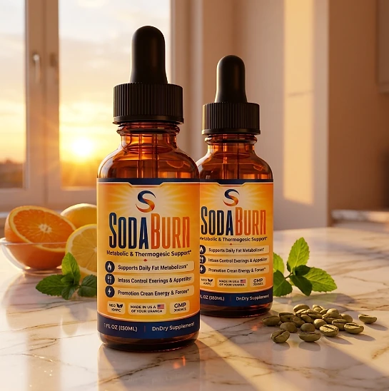
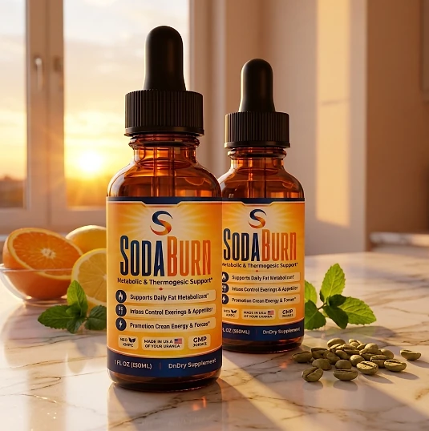
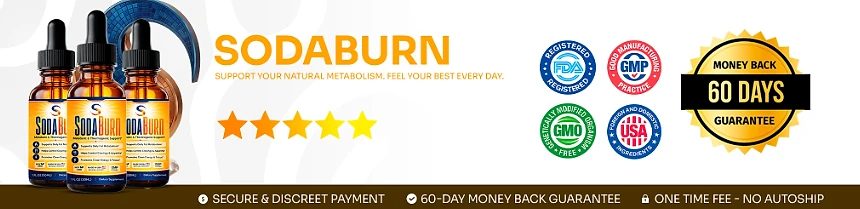

What Is SodaBurn And How Does It Work?
SodaBurn is a liquid dietary supplement designed to support daily metabolism, appetite control, and steady energy for adults who want to address the constant cravings, low energy, and slow progress that can make weight goals feel out of reach through a natural, dependable approach — without complicated routines or temporary quick fixes.
It utilizes a simple daily dropper of liquid that combines Chromium with a proprietary blend led by Maca Root, African Mango Seed, Grape Seed, Guarana Seed, and Green Tea Leaf extracts to support satiety, energy, and focus, helping the body maintain its natural balance throughout the day.
The ingredients in SodaBurn are plant extracts, amino acids, and a trace mineral that, according to the official website, work on three fronts: thermogenic compounds, support for hunger control, and adaptogens for stable energy, particularly for adults who prefer one simple daily serving over multiple products or complicated plans.
Rather than acting as a short-lived artificial fix, SodaBurn focuses on a whole-formula approach, working gradually alongside daily routines to help maintain satiety between meals, craving control, and long-term wellness.
With consistent daily use, many users report fewer cravings during the day, steadier energy, and a gradual sense of control over their eating habits, especially when combined with a balanced diet, good sleep, and regular exercise.
From a practical standpoint, SodaBurn is a daily liquid for metabolic and appetite support designed to support wellness from within — helping you stay active, energized, and in control of your health.
Made in the USA with globally sourced ingredients and manufactured in an FDA-registered facility, according to the product label, SodaBurn is designed for regular daily use, focusing on safety, purity, and quality for those seeking a natural, non-prescription route to healthy weight management.
SodaBurn Ingredients
Every 1 mL serving of SodaBurn contains Chromium and a proprietary blend listed on the Supplement Facts panel. The official website highlights six of its components, chosen to support appetite control, metabolism, and energy as part of a consistent daily routine:
Chromium (7 mcg, as Chromium Picolinate): A trace mineral involved in carbohydrate metabolism, providing 20% of the Daily Value in each serving.
African Mango Seed Extract: A seed extract commonly used to support satiety and appetite control.
Green Tea Leaf Extract: A source of catechins and natural caffeine associated with thermogenesis and mental focus.
Guarana Seed Extract: An Amazonian seed that naturally contains caffeine and provides steady energy through the day.
Maca Root Extract: An Andean adaptogen included to support physical disposition and the response to stress.
Grape Seed Extract: A source of antioxidants that helps protect cells against oxidative stress.
Together, these ingredients work synergistically to support craving control, satiety, and healthy weight management from within. The same blend also lists Eleuthero, Astragalus, Gymnema Sylvestre, Forskohlii, Cayenne Pepper, Grapefruit Seed, and Ginseng extracts, Raspberry Ketones, L-Glutamine, L-Tyrosine, L-Arginine, Beta Alanine, Monoammonium Glycyrrhizinate, GABA, L-Tryptophan, and L-Carnitine. The label states the blend as 15.47 mg per serving, sourced from concentrated extracts, and does not show the amount of each component. The other ingredients are water, natural flavors, potassium sorbate, stevia, xylitol, and citrus extract.
SodaBurn is designed for daily use, offering a natural, non-prescription approach to supporting metabolism and appetite, without complicated routines.
SodaBurn Side Effects
SodaBurn is generally considered well tolerated and is designed for adults of different ages and lifestyles who are looking for a safe, natural, and balanced approach to weight management, especially those who prefer an easy once-a-day liquid routine to support metabolism, appetite, and well-being without resorting to risky solutions with severe side effects.
All ingredients used in SodaBurn are described on the official website as naturally derived, the label carries Non-GMO and GMP seals, and SodaBurn is made in the USA with globally sourced ingredients and manufactured in an FDA-registered facility, according to the product label, reinforcing consistency, safety, and reliability.
With no widespread reports of serious side effects, SodaBurn is generally considered a well-tolerated option. The blend includes Guarana and Green Tea, which naturally contain caffeine, so people sensitive to stimulants may prefer to take it in the morning, and the official website recommends that anyone who takes medications for diabetes, high blood pressure, or heart problems show the label to their doctor first. It is not intended to diagnose, treat, cure, or prevent any disease, and individual results may vary.
According to the label, SodaBurn is not for use by individuals under the age of 18 or by pregnant or nursing women, and individuals with a known medical condition should consult a physician before using it, ensuring it fits safely within their personal wellness plan.
SodaBurn Dosage
The recommended SodaBurn dosage is one dropper full (1 mL) a day, and it is designed to fit easily into a daily routine, making consistency simple and convenient. Formulated as an easy liquid with a dropper, it requires no capsules to swallow, no powders to mix, and nothing complicated to prepare.
The recommended approach, as printed on the label, is to shake the bottle well before each use, take one dropper full daily, place it in the mouth, and swallow. Taking it at the same time each day, or as directed by a healthcare professional, allows its ingredients to work consistently.
For best results, consistency is key. Each bottle contains 1 oz (30 mL), or 30 servings, a one-month supply, and because nutritional support for metabolic balance builds gradually, many people make it part of an ongoing wellness routine.
There is no need for complex schedules or multi-step routines. One simple daily serving is designed to build lasting support gradually alongside a balanced diet, good sleep, and an active lifestyle. The label also advises keeping the bottle away from heat, light, and humidity, and not using it if the safety seal is damaged or missing.
As with any dietary supplement, it's important not to exceed the recommended dose and to check the label on your bottle. SodaBurn works best when used regularly, combined with proper hydration, balanced nutrition, and healthy daily habits.
SodaBurn – Refund Policy
You can order SodaBurn with confidence, knowing that every purchase is protected by a 60-day guarantee from the date of purchase. This allows you to try the formula and decide if it delivers the support you expect.
According to the refund policy on the official website, refund requests can be made after a minimum trial period of 30 days and must be started within 60 days of the purchase date. Only sealed bottles are eligible, shipping and customs fees are not refunded, return shipping is paid by the customer, and a 20% restocking fee is deducted.
How the refund process works: If you decide SodaBurn is not right for you, email customer support to request a return authorization code, then follow the return instructions provided. Once the returned items are received and verified, your refund will be issued to the original payment method, and you will receive a confirmation email.
Customer Support Contact Information: contact@customercs.com or +1 (507) 448-8190, as printed on the product label. The team typically replies to emails within 48 business hours.
Refund Processing Time: After your refund is processed, it may take 5 to 10 business days to appear on your statement, depending on your financial institution.
This refund policy is designed to give customers a clear and transparent experience when trying SodaBurn.
SodaBurn Customer Reviews
-
Michael Thompson — Houston, TXVerified Purchase – 6 Bottles
“I struggled with excess weight for years, which really affected my self-esteem. After using SodaBurn for 3 months, I am now able to lose weight and keep my body in shape. It has revitalized my life and given me a new confidence.”
-
Mark Rodriguez — Chicago, ILVerified Purchase – 6 Bottles
“... I often struggled with losing weight and managing my blood sugar. SodaBurn has been a game-changer for me. After just 1 month of use, I noticed significant improvements in my metabolism and overall health. I feel like I’ve regained my energy!”
-
Lauren Rio — Seattle, WAVerified Purchase – 6 Bottles
“After menopause, I experienced severe weight gain and struggled to shed it. I thought my days of having a healthy body were over until I discovered SodaBurn. After using it for 2 months, I’m now able to enjoy an active life and feel good about myself again. It has truly been a life-changing product.”
SodaBurn – Where To Buy
SodaBurn is sold through its official website, so if you decide to try it, it's important to be careful about where you purchase it. The official website is the only sales channel the manufacturer lists, and it does not point to marketplaces such as Amazon, eBay, or Walmart.
Listings on third-party platforms may look similar but cannot be verified as authentic, raising concerns about safety, quality, and ingredient freshness — a real concern for a liquid formula. Products purchased outside the official source may not be covered by the 60-day guarantee.
For this reason, most customers recommend purchasing SodaBurn only through the official website. Buying directly from the official source ensures you receive the authentic original product, made in the USA, with access to customer support and the full guarantee. According to the official website, every purchase is a one-time order, with no automatic renewals, hidden fees, or surprise charges.
To avoid counterfeit batches and ensure maximum quality, always verify that you are ordering from the official SodaBurn website before completing your purchase.
To ensure you’re getting the authentic product, most users choose to visit the official website.
Is SodaBurn A Scam?
Based on what the official website and the product label disclose, SodaBurn does not appear to be a scam. It is a real liquid supplement, sold through an established retailer, and formulated to support metabolism, appetite control, and healthy weight management as part of a consistent routine.
The ingredients used in SodaBurn — Chromium and a blend with Maca Root, African Mango Seed, Grape Seed, Guarana Seed, and Green Tea Leaf extracts, among others — are well known in the wellness field, and the label publishes a Supplement Facts panel with the full ingredient list and the total amount of the blend for transparency.
In addition to its formula, SodaBurn is made in the USA with globally sourced ingredients and manufactured in an FDA-registered facility, according to the product label, with a focus on safety, purity, and consistency.
Many users report fewer cravings and steadier energy throughout the day and an easy daily habit, making SodaBurn a practical option for those seeking natural support for weight management. The blend is small in quantity, so expectations should stay realistic: results vary from person to person, and no supplement replaces a balanced diet, regular exercise, or medical care.
SodaBurn is backed by a 60-day guarantee, and orders are one-time purchases with no automatic renewals, recurring charges, or hidden fees. The refund rules, including the sealed-bottle requirement and the restocking fee, are published on the official website, which underscores the manufacturer's transparency with customers.
If you're looking for a simple daily liquid to support metabolism, satiety, and well-being without complicated routines, SodaBurn is worth considering — especially when purchased directly from the official website.
For those who want to verify product details or check current availability, the official SodaBurn website remains the safest option.

Check Availability On Official Website
